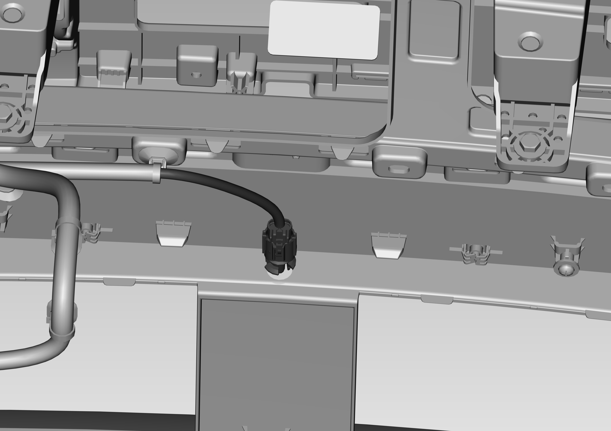

Снятие
1. Отсоединить жгут проводов отрицательной клеммы Аккумуляторная батарея
Ссылка: Аккумуляторная батарея в сборе
2. Снять узел переднего бампера и принадлежности
Ссылка: Узел переднего бампера и принадлежности
3. Снять Датчик температуры наружного воздуха
Отсоединить штекер разъема, зажать фиксатор датчика и потянуть наружу

Установка
Порядок Установка обратен порядку Снятие